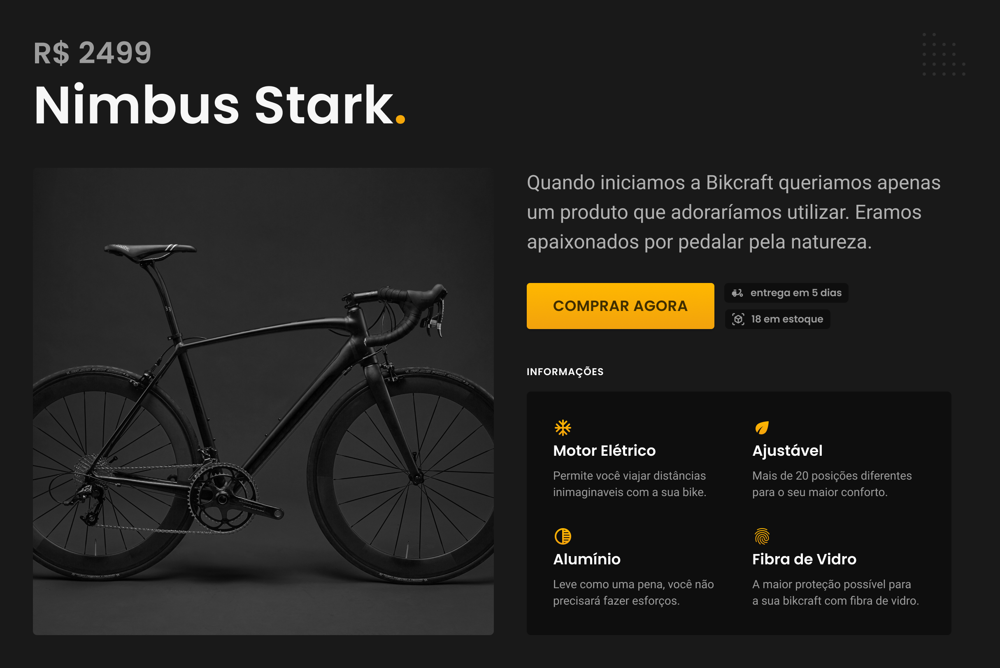
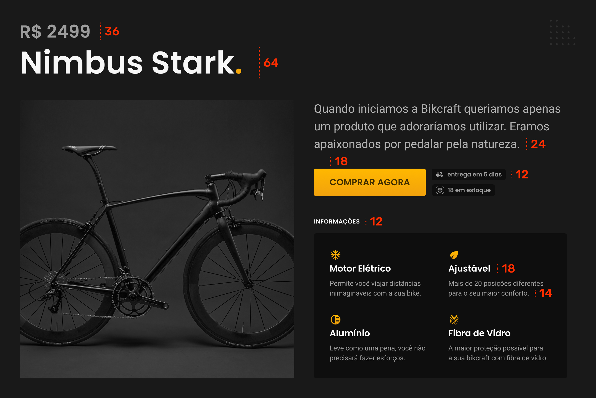
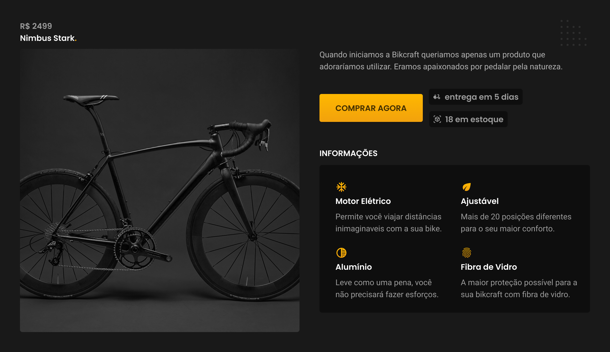
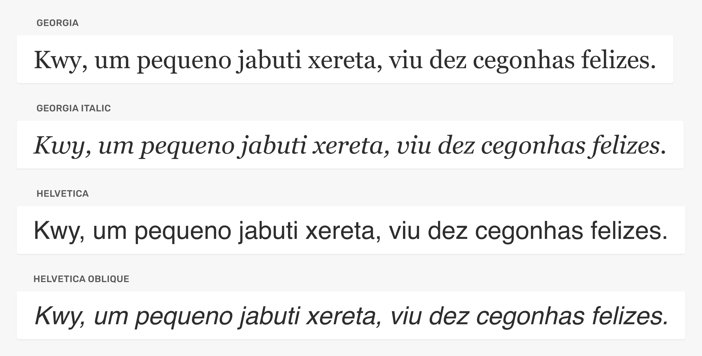
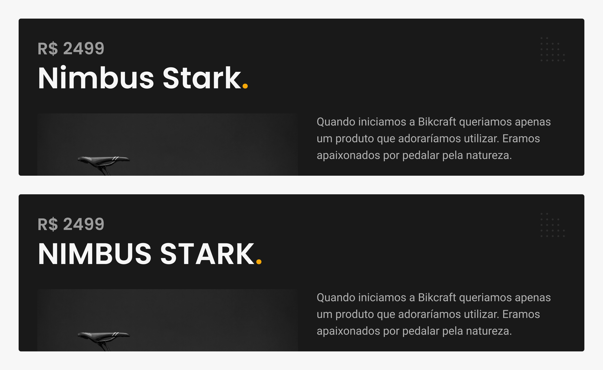
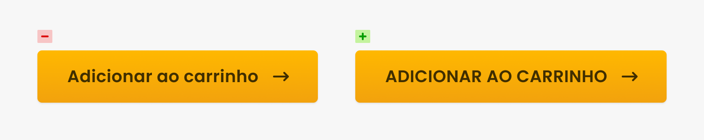
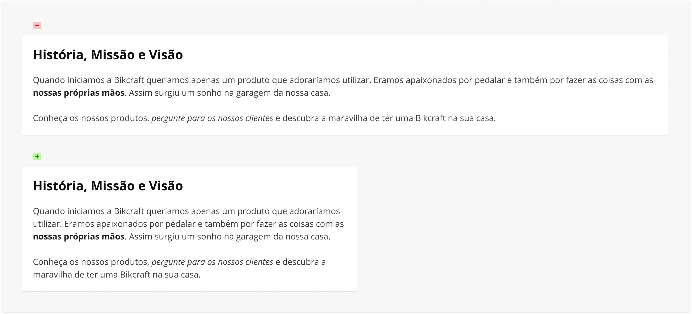
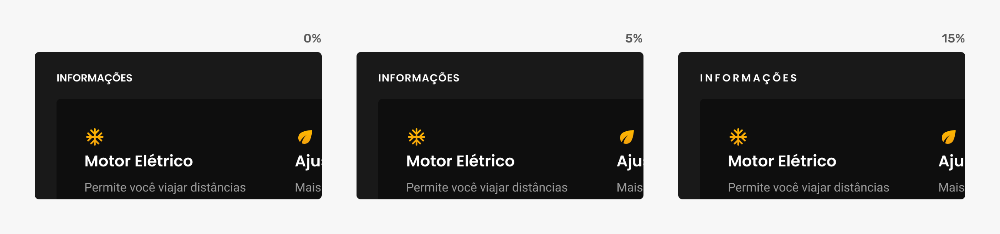

UI Design
Variáveis Tipográficas
Variáveis Tipográficas
Escala
Altura de Linha
Peso e Estilo
Maiúsculas
Largura de Linha
Espaçamento
Alinhamento
Escala
Definir uma escala
Entre 6 e 12 variações são suficientes para definir a hierarquia.
Contraste
Opte por valores que possuam diferenças significativas.
Use: 14 e 18 (28%). Não use: 44 e 48 (9%).
Legibilidade / Leiturabilidade
Entre 14 - 24 para corpo de texto.
Google Material (boa escala)
https://material.io/design/typography/the-type-system.html#type-scale


Sem uma diferença de tamanho entre os textos, a hierarquia não fica bem definida.

Altura de Linha
A altura de linha possui dependência direta com a escala e tipografia.
Corpo
Entre 14 e 24 - use entre 1.3x à 1.5x. Ex: 16/24 ou 24/36.
Corpo Exemplos:
Medium: 21/32 (1.52), Google: 14/22 (1.57), Airbnb: 16/24 (1.5)
Título
Acima de 30 - use entre 1x e 1.25x. Ex: 32/40 ou 64/72.
Título Exemplos:
Airbnb: 30/36 (1.2), Stripe: 94/98 (1.04), Medium: 46/56 (1.22)
Título: 64/72 (1.1), Corpo: 24/36 (1.5)
Título: 64/96 (1.5), Corpo: 24/26 (1.1)
Peso e Estilo
O peso e o estilo são utilizados para criar contraste entre uma mesma família.
Corpo
Dentro de um corpo de texto o peso serve para ênfase, enquanto o estilo itálico/oblíquo serve para destacarmos nomes, palavras estrangeiras e frases.
Peso
Geralmente vão de 100 a 900 e podem também ser representados com nomes: Light, Regular, Normal, Semibold, Bold e Black.
Estilo
Pode ser normal/regular, itálico ou oblíquo. O itálico além de inclinar a tipografia, também modifica alguns caracteres para melhor representar o estilo. Cuidado com itálicos falsos, forçados pelo software.

Maiúsculas
Título
Em títulos a escolha entre maiúsculas e minúsculas está relacionada ao desenho dos caracteres.

Funcional
O uso de maiúsculas é comum em textos funcionais (botões), por criarem um bloco com a tipografia, devido à ausência de ascendentes e descendentes. Esse bloco torna o alinhamento mais consistente.

Largura de Linha
Controlar a largura de linha é essencial para o corpo de texto. Uma largura muito grande dificulta a leitura.
Dica
Entre 45 e 75 caracteres (13 palavras). Sempre controle a largura, mesmo que o seu site tenha um layout fluído, defina o
max-widthdo conteúdo.Exemplos
Google: 85, Medium: 80, New York Times: 65.

Espaçamento
O espaçamento entre os caracteres (tracking/letter-spacing) pode ser modificado, mas cuidado com exageros. Geralmente o definido pelo criador é o ideal.
Maiúsculas podem se beneficiar com o aumento do letter-spacing.

Alinhamento
Esquerda
O mais comum e recomendado para a web.
Direita
Depende do layout, pode funcionar em casos que você possui uma foto à direita e o texto à esquerda.
Centralizado
Funciona para títulos e pequenos textos. Mas deve respeitar o layout do site.